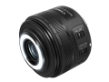
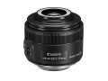

器材库 > APS画幅镜头 > EF-S 35/2.8 Macro IS STM
详细规格
镜头类型
微距镜头
发布日期
2017-04-06
焦距
35mm
等效35mm画幅焦距
56mm
最大光圈
f/2.8
最小光圈
f/32
视角（对角）
42°35
镜头结构
10片/6组
非球面镜片
1片
光圈叶片
7片
最近对焦距离
13cm
最大放大倍率
1倍
驱动马达
STM
滤镜口径
49mm
镜头卡口
Canon EF
防抖
是
颜色
黑色
尺寸
69.2×55.8mm
重量
190g
笨笨小兔子2018-03-25 21:583.92 分
操作性 4.00耐用性 3.50性价比 4.00解像力 4.50色彩还原 4.00机械结构 3.50
产品图 / 样片
EF-S 35/2.8 Macro IS STM
EF-S 35/2.8 Macro IS STM

EF-S 35/2.8 Macro IS STM

EF-S 35/2.8 Macro IS STM
评测 / 相关文章
- 详细内容 （存档）
- 点亮微距世界 佳能EF-S 35mm f/2.8微距镜头评测 （存档）
- ［试用］佳能EF-S 35/2.8 IS STM微距镜头实拍样张 （存档）
- ［资讯］佳能EF-S 35/2.8 IS STM macro开箱图赏 （存档）
- ［资讯］佳能EF-S 35/2.8 IS STM微距样片欣赏 （存档）